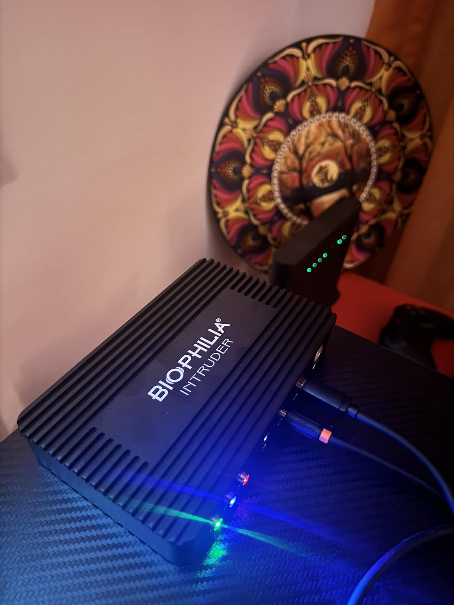
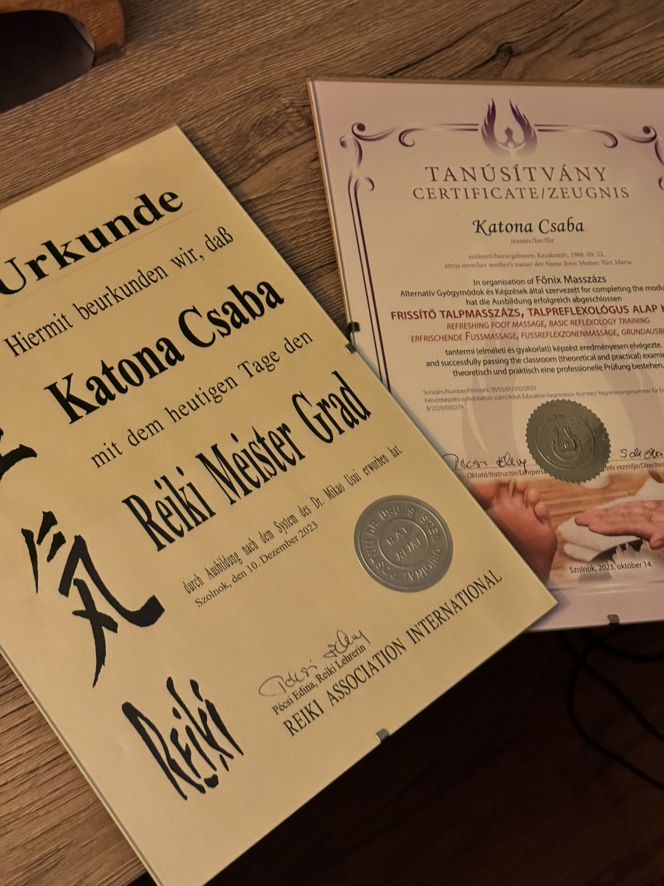
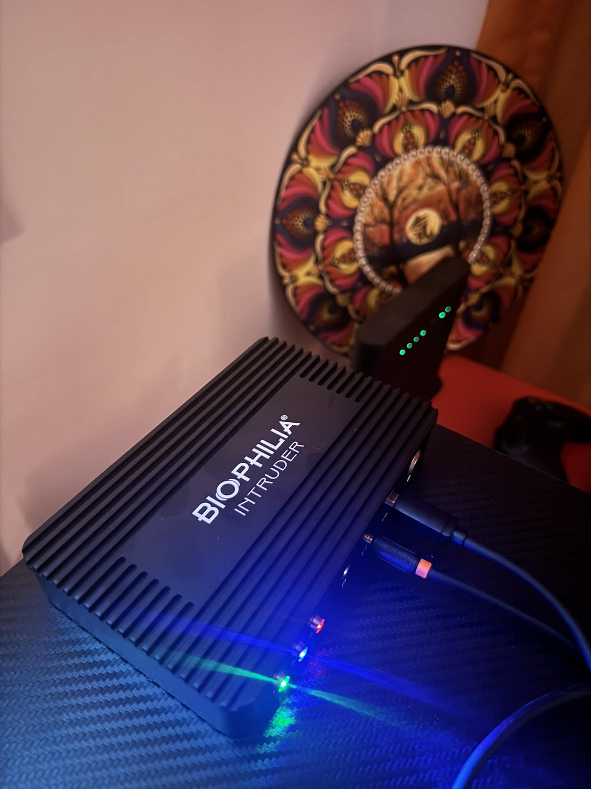
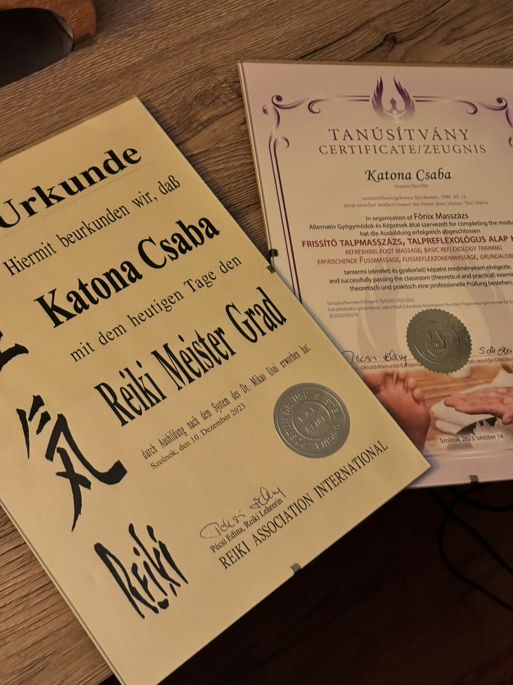

Energiával, erővel, tudatossággal, harmóniával – indulj el a belső utadon!
Energiával, erővel, tudatossággal, harmóniával – indulj el a belső utadon!
Modern kvantumtechnológia segítségével térképezzük fel testi-lelki állapotod és támogatjuk az öngyógyító folyamatokat.
Univerzális energiával történő harmonizálás, amely támogatja a belső egyensúlyt és nyugalmat.
Finom érintésekkel oldjuk a sejtszintű blokkokat és a múlt lenyomatait a gerinc reflexpontjain keresztül.
Izomlazító, vérkeringés-fokozó kezelés, amit a köpöly technika tesz még hatékonyabbá.
A láb reflexzónáin keresztül támogatjuk a szervek működését és az energetikai egyensúlyt.
 


